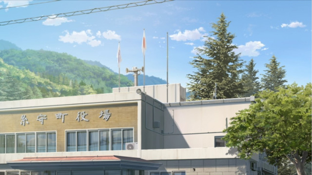
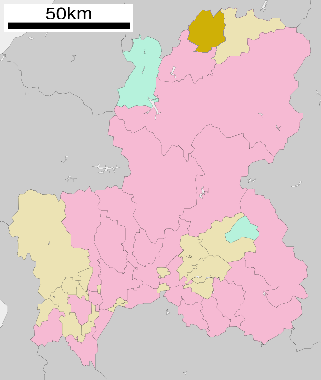

糸守町
| 糸守町 | |
|---|---|
|
隕石衝突後に形成された新糸守湖（手前）
|
|
| 廃止日 | 2015年2月1日 |
| 廃止理由 | 編入合併 糸守町 → 羽衣市 |
| 現在の自治体 | 羽衣市 |
| 廃止時点のデータ | |
| 国 | |
| 地方 | 中部地方、東海地方 |
| 都道府県 | 岐阜県 |
| 団体コード | 21???-? |
| 面積 | -km2 （境界未定部分あり） |
| 総人口 | 1,596人 （2013年10月1日） |
| 隣接自治体 | 羽衣市、綾瀬町 |
| 町の木 | - |
| 町の花 | - |
| 町の鳥 | - |
| 糸守町役場 | |
| 所在地 | 〒50?-???? 岐阜県吉城郡糸守町門入  |
| 外部リンク | 神岡町（インターネットアーカイブ） |
| 座標 | 北緯36度 東経137度 |
|  | |
| ウィキプロジェクト | |
{kind=link}
{kind=link}
{kind=link}
{kind=link}
{kind=link}
{kind=link}
目次
地理編集
岐阜県の北部に位置し、町の中央には数千年前に形成された隕石クレーターである糸守湖がある。 南部の平野には市街地が広がっている。北部は山岳地帯であり、湖との間の急峻な地形に住宅が点在する。糸守湖から流出する河川は、湖西部の糸引川のみであり、周辺には湖に流入する河川 をつなぐ運河がある。糸守町は糸守湖を中心とした隕石クレーター内部に形成されており、世界的にも珍しい土地である。
地域編集
- 宮守（みやもり）
糸守湖北部に位置する地区。平地はほとんどなく斜面に住宅や田畑がある。
- 親沢（おやざわ）
糸守湖北東に位置する地区。宮守地区よりは若干平地がある。山間部に中部電力糸守変電所がある。
- 上淵（かみふち）
糸守湖北西の山間部に位置する地区。
- 坂上（さかがみ）
糸守湖西部に位置する地区。糸守小学校や糸守展望台、坂上消防署がある。地区名の通り、南に向けて下り坂になっている。門入地区との境にある糸引川に昇竜橋が架かっている。
- 下淵（しもふち）
糸守湖東側に位置する地区。竜ヶ滝、溝ノ口採鉱地などがある。
- 門入（かどいり）
糸守湖南西から南に位置する地区。国道257号線に沿って町の中心部として発展し、町役場や、商店街、簡易郵便局、JA糸守、糸守駅などがある。
- 平場（ひらば）
糸守湖南部の高台に位置する地区。糸守高校がある。
- 宮入（みやいり）
糸守湖南東に位置する地区。
歴史編集
糸守周辺では数多くの製鉄場跡が発見されていており、昔から製鉄が盛んな地域であった。9世紀の後半には大規模な製鉄が始まり、製鉄が糸守の主産業になっていたと考えられている。 9世紀初頭の文献に「糸守の百姓が国司に反乱を起こしたとの噂を聞いた」との記述があり、この時初めて糸守が登場する。 その後に書かれた文献の一箇所に「世に響き渡る糸守の製鉄技術を幕府が気に入った」とする記述があり、これらのことから9世紀の終わりにはすでに糸守の製鉄が全国的にも有名であったと推測される。 日本刀の製作も盛んで、たびたび幕府方に対し刀を献上していたという記録が残っている。
糸守の製鉄は明治に入ってからも行われていたが、安価な西洋の鉄に押され、糸守の製鉄に対する需要は失われていった。そして1894年（明治27年）に門入地区にあったたたら場の火が消され、糸守の製鉄の歴史は途絶えてしまった。 1927年（昭和2年）には親沢地区で製鉄場跡が発見されている。
また、糸守では組紐の制作が伝統的に行われており、その評価は高い。糸守での組紐の制作は9世紀ごろに始まったものとみられている。 当時の組紐は袴などの一般的な仕様ではなく、儀式的な象徴としてまつられていたという説がある。 しかしながら1800年ごろに起きた「繭五郎の大火」と呼ばれる大火災によって消失したとされ、現在では口伝でその歴史や技術が伝えられいるのみである。現在では、伝統の製法も用いて少数ではあるが続けられている。
年表編集
- 2013年（平成25年）10月4日 - ティアマト彗星より分裂した破片が町北部に落下し、のちに新糸守湖と呼ばれるクレーターを形成。糸守町は壊滅的な被害を受け、多数の死者行方不明者を出す。
- 2015年（平成27年）2月1日 - 隕石衝突によって町政は回復不能までに陥ったため、隣接する岐阜県羽衣市に編入され、同日糸守町廃止。
糸守隕石災害編集
およそ1200年周期で太陽系を周回するティアマト彗星が2013年（平成25年）10月4日に月よりも地球に接近し通過するものとみられていた。 しかし、同日午後6時半頃ティアマト彗星が2つに分裂し、約2時間後の午後8時42分頃糸守湖の北部に落下し直径約1ｋｍに及ぶクレーターが形成された。
気象庁の発表によると、彗星の破片は40メートルほどの大きさの鉄などを含んだ岩塊で、秒速30km以上のスピードで糸守町に落下したと思われる。 地表に衝突した瞬間の大爆発が山肌をえぐり取り、地震が発生した。この地震ではマグニチュード4.8を記録し130km離れた岐阜市でも震度3を観測した。 半径数kmにわたって爆風が広がり家屋などの建築物が倒壊したほか、衝撃波は糸守町に隣接する綾瀬町や羽衣市にも伝わり、窓ガラスを割るなどの被害を出した。 政府は震災対策本部を設置し、糸守町より半径30kmの住民を避難させるよう岐阜県、同県羽衣市、綾瀬町に指示し、4日4時の時点で約5000人の大半が避難した。 また、岐阜県からの災害派遣要請で各務原岐阜分屯地の陸上自衛隊が出動、被災地域住民の救援活動を行ったが難航した。糸守湖の氾濫と火災によって道路が寸断され、近づくことも困難な状況となった。 気象庁は今回の隕石を「糸守隕石」と命名した。
糸守湖から流出する糸引川に掛かる昇竜橋では数メートルに及ぶ津波を観測した。 当日、隕石の落下地点に程近い宮水神社では秋の例大祭が行われており、宮守地区を中心に当時の町の人口の3分の1にあたる約500名の死者行方不明者を出し、有史以来世界最大の隕石災害となった。 現在でも旧糸守町内には規制線が張られており、立ち入れなくなっている。
教育編集
行政編集
産業編集
かつては鉄が産出されたため製鉄が盛んだったが、現在では廃れている。近年では伝統工芸品である組紐や、糸守湖などの観光業も盛んであった。
交通編集
鉄道[編集]
町の南西部から、北西部に向かって旧高山本線が伸びていたが隕石落下の影響を受け2013年（平成25年）10月5日より休止、2014年（平成26年）1月1日をもって廃線となった。
道路[編集]
町の南部に国道257号が、北部に国道258号が横断しているが両方とも途中で途切れている。 町内にはその他県道41号が通っている。
一般国道
主要地方道
観光編集
関連項目編集
外部リンク編集
- 糸守町
- 糸守隕石災害への対応 - 首相官邸 -
- 糸守隕石災害 関連情報 - 農林水産省 -
- 隕石災害はなぜ起きたか - 糸守隕石災害に迫る -